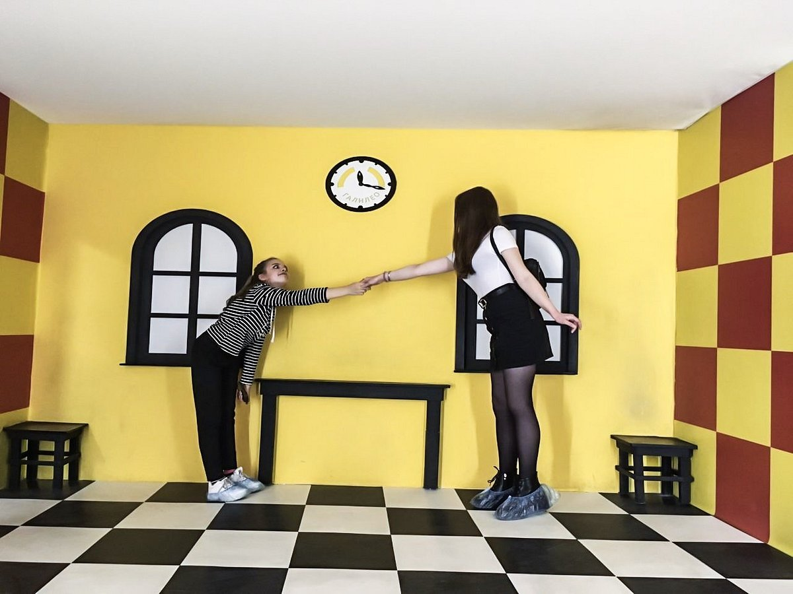
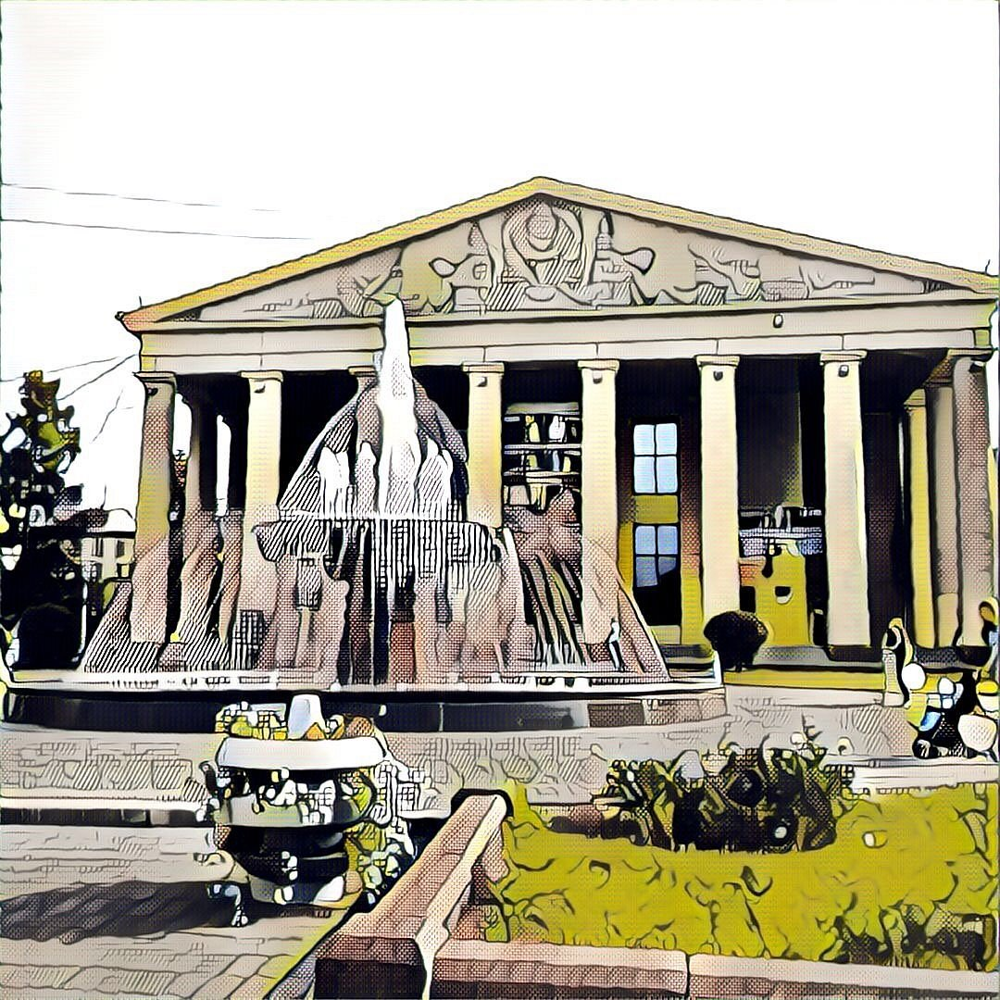

Популярные Достопримечательности Городов

Драм Театр В Томске
Томский областной театр драмы - один из старейших в Сибири: первое театральное здание было построено в 1850 году. Деятельность томской драмы неразрывно связана с жизнью и развитием города - известного в стране вузовского и культурного центра.
Адрес: г.Томск,
ул. Ленина 17
Открыт с 12:00 - 20:00

Парк Чудес Галилео В Новосибирске
"Парк чудес Галилео" в Новосибирске - это удивительный интерактивный музей, в котором представлены уникальные экспонаты и конструкции, невероятные иллюзии и огромный зеркальный лабиринт. Работа всех экспонатов основана на законах физики, математики, объяснении как устроен окружающий мир и демонстрации особенностей человеческого организма.
Адрес: г.Новосибирск,
ул. Фрунзе 11А
Открыт с 8:00 - 18:00

Кемеровский областной театр драмы имени А. В. Луначарского В Кемерово
История Кемеровского областного театра драмы началась 1 ноября 1934 года. Тогда ещё Государственный театр драмы «Культармеец Кузбасса» открыл первый театральный сезон спектаклем «Гибель эскадры» по пьесе Александра Корнейчука в постановке Алексея Ларионова
Адрес: г.Кемерова,
ул. Павлова 121
Открыт с 14:00 - 18:00
Музей мировой погребальной культуры В Новосибирске
Музей мировой погребальной культуры — новосибирский музей, посвящённый похоронным традициям различных народов. Является единственным в России музеем данной направленности. Музей расположен в Парке памяти Новосибирского крематория
Адрес: г.Новосибирск,
ул. Кашелева 1
Открыт с 9:00 - 23:00
Зоопарк В Новосибирске
Новосибирский зоопарк имени Ростислава Александровича Шило — один из крупнейших зоопарков России. Занимает площадь 65 га, в нём содержится около 12 000 особей 790 видов. Более 350 видов занесены в Международную красную книгу. Около 180 видов внесено в Красную книгу России и Региональные Красные Книги.
Адрес: г.Новосибирск,
ул. Военторговская, 4/16
Открыт: 12:00 – 19:00